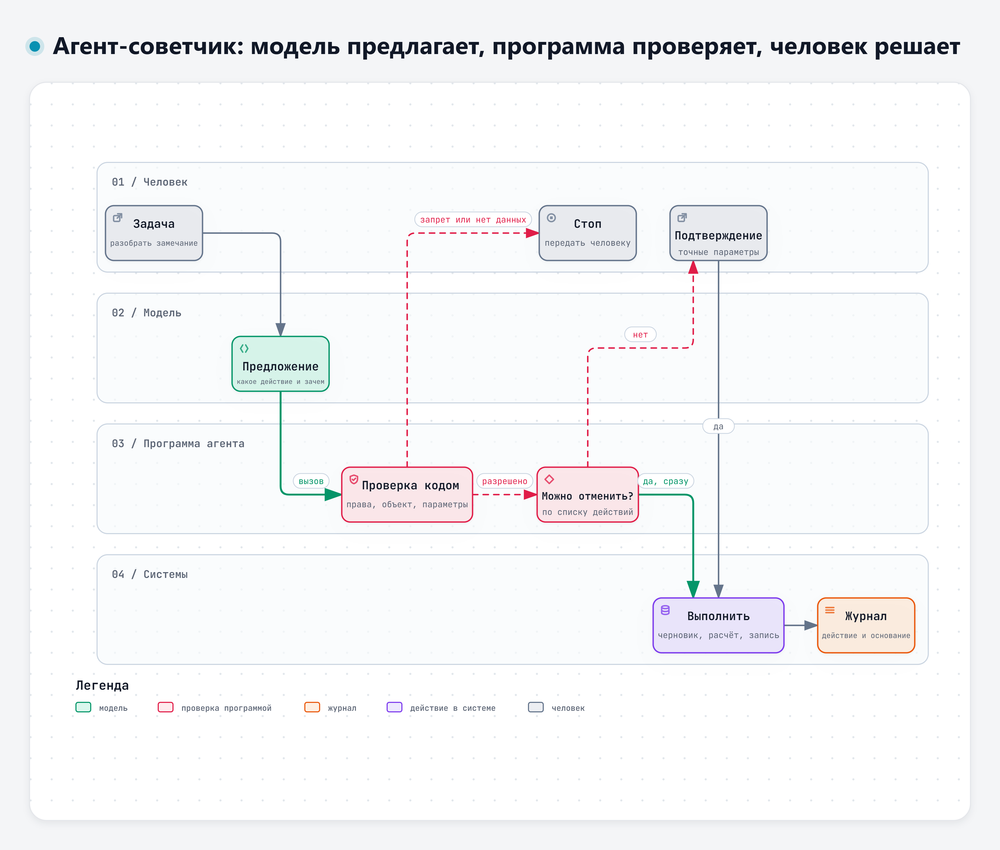
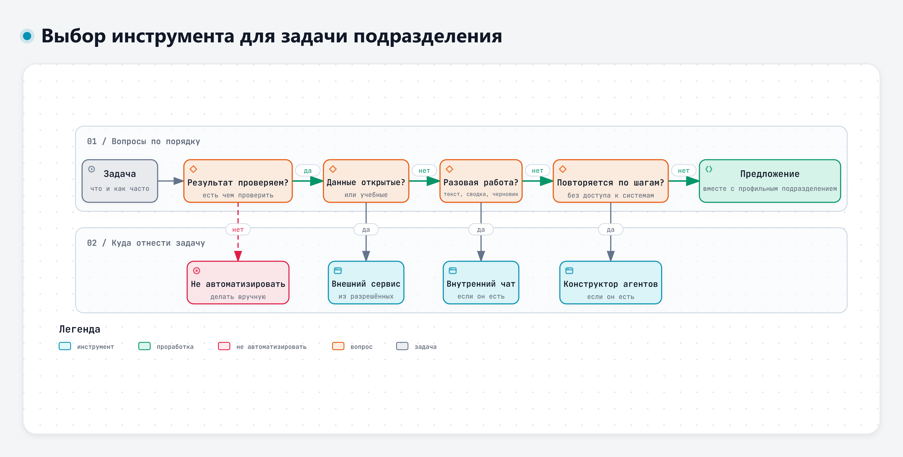

Внутренние решения и инструменты за пределами разрешённых сервисов
Практика: сравнение инструментов, перечень задач подразделения; выбор инструмента, задание для программирующих.
25.11.2026, среда · ВКС на Платформе
Сильные модели и внутренние решения, агенты как советчики и шлюзы безопасности. Итог курса – свой рабочий сценарий с ИИ и паспорт для предложения на автоматизацию.
Время московское
Лекции и практика проходят по видеосвязи на Платформе. Самостоятельную работу и контрольную точку загружают на Платформу до следующего занятия.
лекция
практика
практика
лекция
практика
практика
самостоятельно
контроль
Модуль 5
Практика: сравнение инструментов, перечень задач подразделения; выбор инструмента, задание для программирующих.
Практика: сценарий на своей задаче; представление сценариев, оценка экономии времени.
Для показа и повторения
Слайды листаются стрелками, пробелом, кнопками внизу экрана и жестом на телефоне. Светлая и тёмная тема переключаются кнопкой справа сверху. Те же слайды в PowerPoint и PDF – в архиве дня ниже.
Для слушателей
У каждого материала две версии: «Читать» открывает страницу в браузере, «Markdown» скачивает файл для работы офлайн.
Полные тексты лекций с цитатами из исследований, схемами и источниками.
Задания практических занятий и документы учебного кейса ЭС-24. Markdown-файлы можно скачать и открыть в любом редакторе.
Нажмите на схему, чтобы открыть интерактивную версию




Лекции, практика, учебные документы, самостоятельная работа, слайды в HTML, PowerPoint и PDF, схемы и материалы преподавателя.
Скачать архив ↓Полный комплект курса для работы без интернета.
Скачать курс ↓